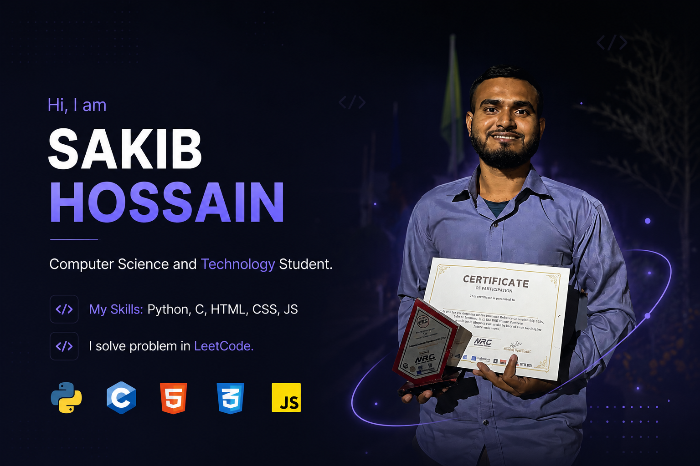

I’m a 3rd-semester Diploma student in Computer Science & Technology at A K Khan UCEP Polytechnic Institute, Bangladesh. I build things that blend software and hardware — from web apps to autonomous robots.
Programming: Python, C, HTML, CSS, JavaScript
Robotics & IoT: Built a line-following robot, an IoT-based traffic management system, and competed in 5 national robotics competitions
AI & Desktop Apps: Created an AI Tutor desktop app using Python (Tkinter + Gemini API)
Research Assistance: Assisted our CST department HOD in an advanced health monitoring and stress monitoring system research project
IoT-Based Traffic System – Smart road management using sensors and microcontrollers
Line Following Robot – Autonomous robot for competition-grade navigation
AI Tutor (Tkinter + Gemini) – A conversational learning assistant with a GUI
Health & Stress Monitoring System – Research project with my department head (assisted in development)